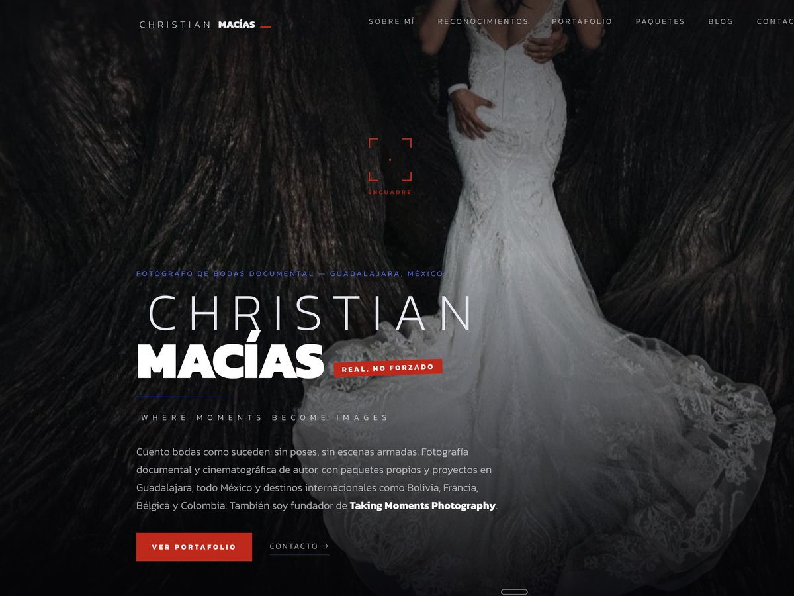
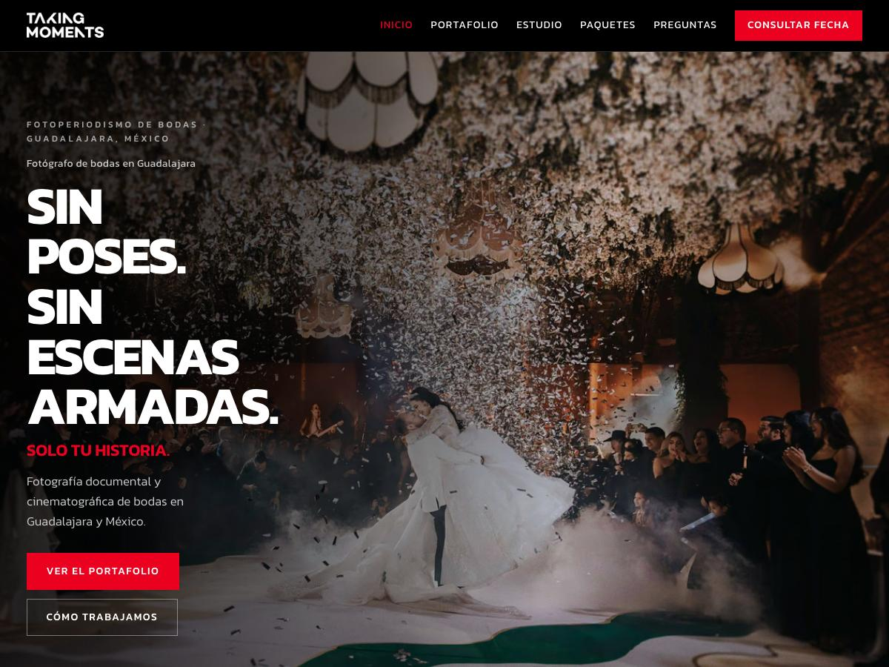
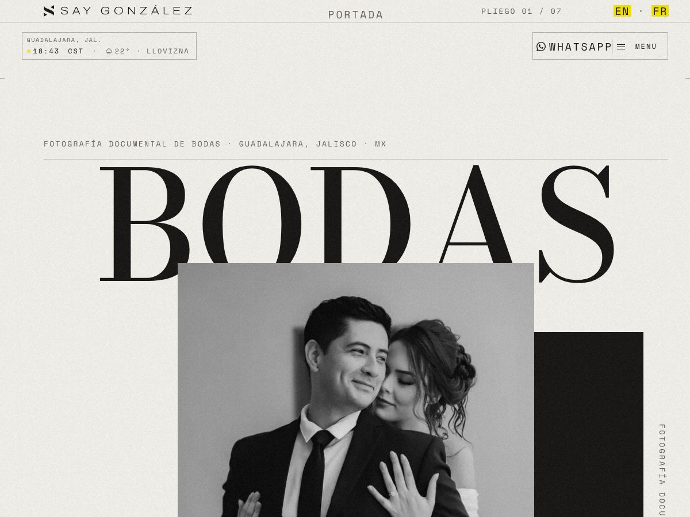

Diseño web · Guadalajara
Diseño web en Guadalajara
Sitios a la medida para negocios de aquí, con el SEO puesto desde el primer día y no pegado al final.
Tres sitios en producción · christianmacias.com · takingmoments.com · saygonzalez.com
En Guadalajara hay miles de negocios buenos con sitios que no los representan: plantillas compradas, textos que podrían ser de cualquiera, y cero presencia cuando alguien busca justo lo que venden. El problema casi nunca es el diseño solo, ni el SEO solo — es que se hicieron por separado. Un sitio bonito que Google no entiende no trae clientes; uno optimizado que se ve genérico tampoco convence a quien llega.
Lo que revisamos en un negocio de Guadalajara
Ese es el diagnóstico gratuito: qué está mal y con qué evidencia. Sin llamada de ventas.
Pedir el diagnóstico de tu sitio →Qué cambia en un negocio local
01
Te encuentran buscando, no scrolleando
Quien busca «imprenta en Zapopan» o «dentista cerca de mí» ya decidió comprar; sólo falta a quién. Ahí es donde el sitio trabaja mientras tú no.
02
El teléfono deja de ser el único canal
Precios, alcance y forma de trabajar publicados. Llega menos gente, pero llega sabiendo qué cuesta — y esa conversación empieza mucho más adelante.
03
Dejas de rentar tu presencia
En redes, la plataforma decide quién te ve. Un sitio propio, con su dominio y su código entregado, no se lo puede quitar nadie.
Dónde trabajamos
Toda la zona metropolitana, y el resto de Jalisco
Guadalajara, Zapopan, San Pedro Tlaquepaque, Tonalá, Tlajomulco de Zúñiga, El Salto, Zapotlanejo, Ixtlahuacán de los Membrillos y Juanacatlán. También Chapala, Ajijic y Puerto Vallarta.
El trabajo es remoto y la comunicación va por WhatsApp y correo. Estar en la misma ciudad ayuda cuando hace falta vernos, pero no es un requisito para trabajar: la mitad de lo que hacemos se revisa mejor con el sitio abierto en pantalla que en una sala de juntas.
Ver cómo trabajamos, paso por paso →Qué incluye, según el alcance
Semilla — $12,000 a $15,000 MXN
Landing de una página · Base SEO · Ficha de negocio local · WhatsApp conectado 02Raíz — $25,000 a $32,000 MXN
Sitio multi-página · SEO técnico completo con schema · Google Business · Analítica 03Bosque — $42,000 a $55,000 MXN
Todo lo anterior · Bilingüe o trilingüe · Landing pages de campaña · Contenido continuoPago único, no mensualidad. Los tres incluyen diseño responsivo, HTTPS, hosting y entrega del código fuente sin candados. Son precios de referencia: la cotización formal se confirma por escrito según el alcance real antes de empezar.
Ver los tres niveles en detalle →Trabajo hecho aquí
Tres sitios, tres negocios de Guadalajara
Raíz es un estudio nuevo y no vamos a inventar una lista de clientes. Estos son los que hay, y los tres son de aquí.

Diseño a medida · SEO técnico desde el día uno

Diseño a medida · SEO técnico desde el día uno

Auditoría de experiencia · mejoras de navegación
Preguntas de quien busca en Guadalajara
¿Cuánto cuesta una página web en Guadalajara?+
En Raíz, entre $12,000 y $55,000 MXN de pago único, según el alcance. Una landing de una página con base SEO empieza en $12,000–15,000; un sitio multi-página con SEO técnico completo va de $25,000 a $32,000. Vas a encontrar quien cobre $3,000 y quien cobre $150,000: la diferencia real está en si el sitio se construye a la medida o se rellena una plantilla, y en si el posicionamiento viene incluido o se vende aparte después.
¿Trabajan de forma presencial o a distancia?+
El trabajo se hace en remoto y la comunicación va por WhatsApp y correo. Estamos en Guadalajara, así que vernos en persona es posible cuando el proyecto lo pide — pero no es necesario para trabajar, y no querríamos que fuera el motivo por el que nos eliges.
¿Sirve de algo tener sitio web si ya estoy en Instagram y Facebook?+
Sirven para cosas distintas. Las redes te dan alcance mientras publicas: dejas de publicar y desapareces. El sitio aparece cuando alguien busca lo que vendes, aunque hayas publicado por última vez hace tres meses. Y hay una diferencia de fondo: en redes rentas el espacio y la plataforma decide quién te ve. El sitio, con su dominio y su código entregado, es tuyo.
¿Cuánto tarda mi negocio en salir en Google?+
Un sitio nuevo tarda semanas en indexarse por completo — Google tiene que descubrirlo, rastrearlo y decidir que vale la pena. Las búsquedas específicas de tu negocio suelen moverse en los primeros 90 días; los términos peleados, alrededor de los 180. En búsquedas locales, con la ficha de Google Business bien puesta, el efecto puede notarse antes. Cualquiera que te prometa primer lugar en dos semanas te está vendiendo algo que no controla.
¿Atienden negocios fuera de Guadalajara?+
Sí. Trabajamos con negocios de todo México y del extranjero. Para clientes fuera de México se cotiza en dólares, y el medio de pago y quién cubre las comisiones se definen por escrito antes de cerrar, no después.
¿Qué necesito tener listo para empezar?+
Menos de lo que parece. Los textos los escribimos nosotros a partir de una conversación contigo — no te vamos a mandar un documento en blanco para que lo llenes. Ayuda tener fotos propias del negocio, el acceso a tu dominio si ya lo compraste, y claridad sobre qué quieres que haga la persona que llegue al sitio: que escriba, que llame, que cotice o que compre.
Mándanos tu dominio
Te devolvemos un diagnóstico honesto de tu superficie y de tu subsuelo. Sin llamada de ventas.